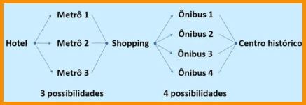

CONTAGEM
O princípio fundamental da contagem, também chamado de princípio multiplicativo,
é utilizado para encontrar o número de possibilidades para um evento constituído de
n etapas. Para isso, as etapas devem ser sucessivas e independentes.
Se a primeira etapa do evento possui x possibilidades e a segunda etapa é constituída
de y possibilidades, então existem x . y possibilidades.
Portanto, o princípio fundamental da contagem é a multiplicação das opções dadas
para determinar o total de possibilidades.
Esse conceito é importante para a análise combinatória, área da Matemática que reúne os métodos para resolução de problemas que envolvem a contagem e, por isso, é
muito útil na investigação de possibilidades para determinar a probabilidade de fenômenos.
.png)
EXEMPLO
João está em um hotel e pretende ir visitar o centro histórico da cidade. Partindo do hotel existem 3 linhas de metrô que levam ao shopping e 4 ônibus que se deslocam do shopping para o centro histórico.
Se existem 3 possibilidades de sair do hotel e chegar até o shopping, e do shopping para o centro
histórico temos 4 possibilidades, então o total de possibilidades é 12.
Outra maneira de resolver o exemplo seria pelo princípio fundamental da contagem, efetuando a
multiplicação das possibilidades, ou seja, 3 x 4 = 12.
Para melhorar seus estudos...
Matemática pode ser um conteúdo difícil. Para aumentar seu aprendizado, acesse ao mapa mental e a playlist de vídeo aulas sobre este assunto: